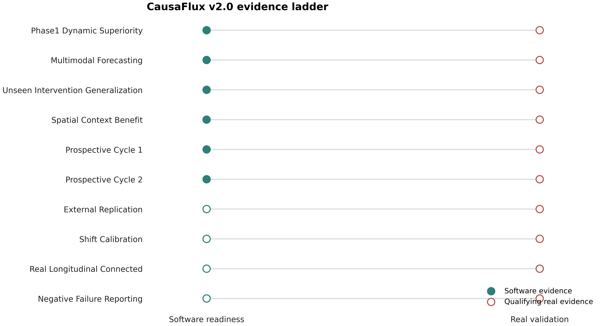
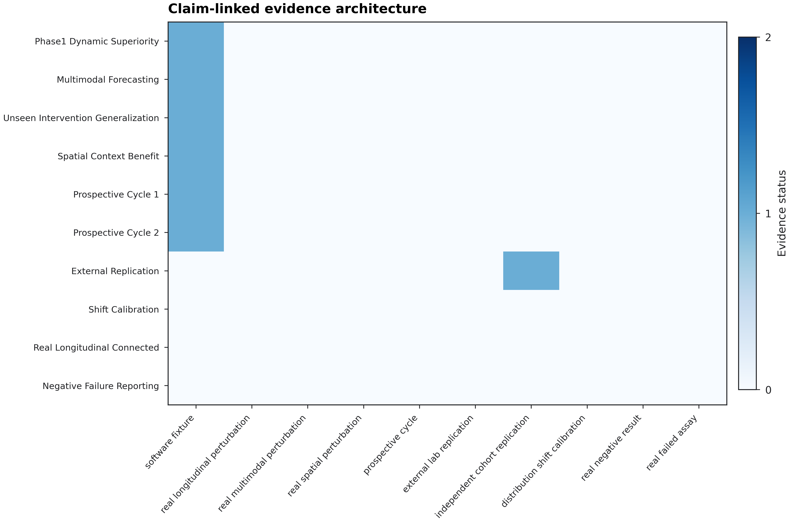
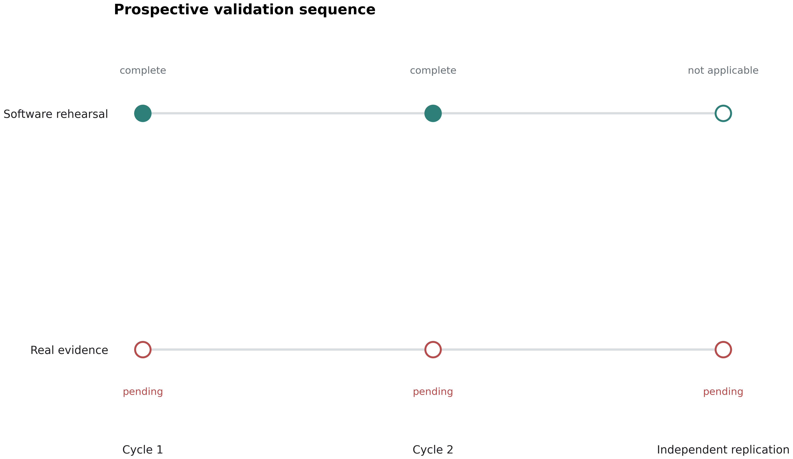
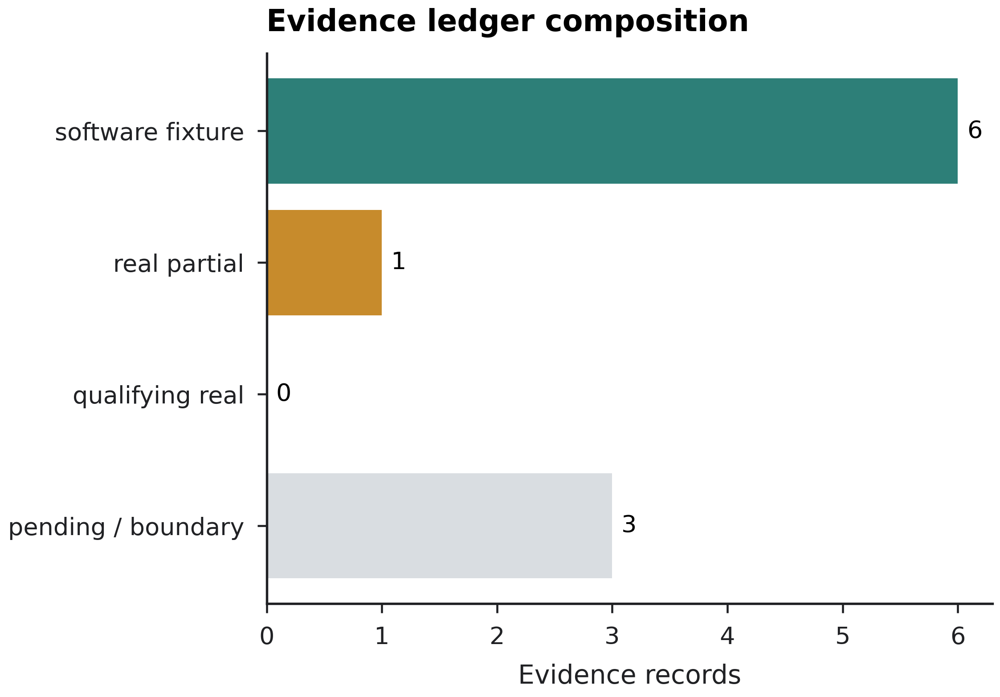
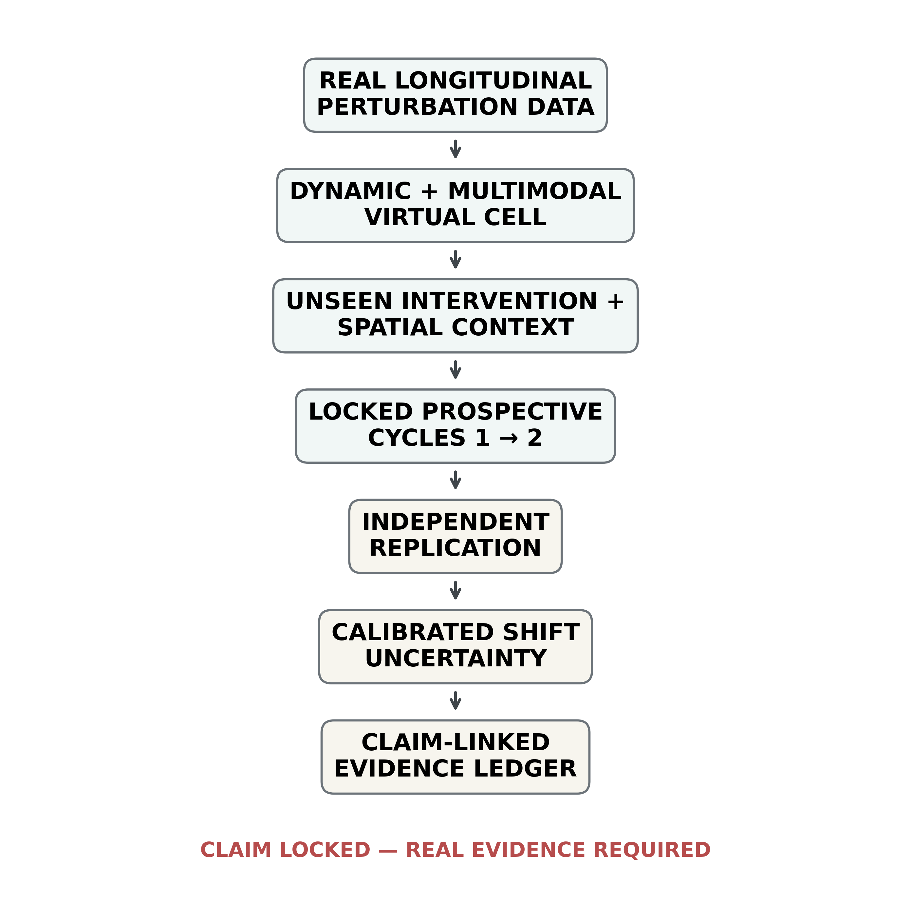

CausaFlux v2.0.0 treats the version title as a release standard, not an automatic claim. Synthetic software fixtures remain useful for regression testing but cannot satisfy the real validation gate.
| criterion | description | passed | detail |
|---|---|---|---|
| CF2_PHASE1_DYNAMIC_SUPERIORITY | Phase 1 dynamic superiority established on real held-out longitudinal perturbation data | False | no qualifying real PASS evidence |
| CF2_MULTIMODAL_FORECASTING | Multimodal forecasting validated on real data | False | no qualifying real PASS evidence |
| CF2_UNSEEN_INTERVENTION_GENERALIZATION | Unseen intervention generalization validated on real held-out interventions | False | no qualifying real PASS evidence |
| CF2_SPATIAL_CONTEXT_BENEFIT | Spatial context adds predictive value on independent real tissue data | False | no qualifying real PASS evidence |
| CF2_PROSPECTIVE_CYCLE_1 | Prospective experimental Cycle 1 completed with preregistered locked predictions | False | no qualifying real PASS evidence |
| CF2_PROSPECTIVE_CYCLE_2 | Prospective experimental Cycle 2 completed after model update | False | no qualifying real PASS evidence |
| CF2_EXTERNAL_REPLICATION | Independent cohort or external laboratory replication completed | False | independent qualifying replications=0 |
| CF2_SHIFT_CALIBRATION | Calibrated uncertainty maintained under prespecified distribution shift | False | no qualifying real PASS evidence |
| CF2_REAL_LONGITUDINAL_CONNECTED | Actual longitudinal perturbation dataset connected to model training and prospective loop | False | no qualifying real PASS evidence |
| CF2_NEGATIVE_FAILURE_REPORTING | Failures and negative results are explicitly retained and reported | False | real-study reporting completeness not attested |
Every release-level claim is linked to a typed evidence record. Pending, failed and negative evidence is retained rather than removed from the report.
| evidence_id | claim_id | status | evidence_kind | source | independent | prospective | synthetic | negative_or_failure | cycle | metric | value | threshold | notes | sha256 | recorded_at_utc |
|---|---|---|---|---|---|---|---|---|---|---|---|---|---|---|---|
| SW_DYNAMIC | CF2_PHASE1_DYNAMIC_SUPERIORITY | SOFTWARE_PASS | software_fixture | /mnt/data/CausaFlux_v2.0.0/dynamic_benchmark_reference/dynamic_benchmark_status.json | False | False | True | False | NaN | NaN | NaN | NaN | Synthetic dynamic superiority software gate only. | 127f1fc02c9c518a0560ba72fa075fc7aa88404ce460672a2fbe11d9a8fcba77 | 2026-08-07T19:25:57+00:00 |
| SW_MULTIMODAL | CF2_MULTIMODAL_FORECASTING | SOFTWARE_PASS | software_fixture | /mnt/data/CausaFlux_v2.0.0/multimodal_dynamic_reference/multimodal_exit_gate.json | False | False | True | False | NaN | NaN | NaN | NaN | Synthetic multimodal forecasting gate only. | df35c483e3cd4b590843d5f6df722acf109f2cca1e47c5f3dd86983996ac4a34 | 2026-08-07T19:25:57+00:00 |
| SW_INTERVENTION | CF2_UNSEEN_INTERVENTION_GENERALIZATION | SOFTWARE_PASS | software_fixture | /mnt/data/CausaFlux_v2.0.0/intervention_generalization_reference/intervention_exit_gate.json | False | False | True | False | NaN | NaN | NaN | NaN | Synthetic unseen-intervention software gate only. | a6939296b640bf298ada0608d534af1abc15901ad11ef45d2ea5f17bc00822d2 | 2026-08-07T19:25:57+00:00 |
| SW_SPATIAL | CF2_SPATIAL_CONTEXT_BENEFIT | SOFTWARE_PASS | software_fixture | /mnt/data/CausaFlux_v2.0.0/spatiotemporal_tissue_reference/spatiotemporal_exit_gate.json | False | False | True | False | NaN | NaN | NaN | NaN | Synthetic spatial-context software gate only. | d024f248b24ffb0a4f9b27b043dd10dbf4abf14c0dba7c55ec819e1694baf47c | 2026-08-07T19:25:57+00:00 |
| SW_PROSPECTIVE_CYCLE_1 | CF2_PROSPECTIVE_CYCLE_1 | SOFTWARE_PASS | software_fixture | /mnt/data/CausaFlux_v2.0.0/prospective_loop_reference/prospective_exit_gate.json | False | True | True | False | 1.0 | NaN | NaN | NaN | Prospectively locked synthetic workflow; not a real experimental cycle. | e5c45d5bab77950bbdcb3e6097f248c5252239d14d98bfe6a22390c99fe06593 | 2026-08-07T19:25:57+00:00 |
| SW_PROSPECTIVE_CYCLE_2 | CF2_PROSPECTIVE_CYCLE_2 | SOFTWARE_PASS | software_fixture | /mnt/data/CausaFlux_v2.0.0/prospective_loop_reference/prospective_exit_gate.json | False | True | True | False | 2.0 | NaN | NaN | NaN | Prospectively locked synthetic workflow; not a real experimental cycle. | e5c45d5bab77950bbdcb3e6097f248c5252239d14d98bfe6a22390c99fe06593 | 2026-08-07T19:25:57+00:00 |
| REAL_OBSERVATIONAL_REPLICATION | CF2_EXTERNAL_REPLICATION | PARTIAL | independent_cohort_replication | /mnt/data/CausaFlux_v2.0.0/biological_validation_reference/biological_validation_status.json | True | False | False | False | NaN | NaN | NaN | NaN | Retained observational source-cohort replication=3; does not satisfy perturbational external replication. | d00cd8d0cbd00bf73c3bb636aa5218e30b5d0cc7cdfdac5f2c3cac3eb3e29959 | 2026-08-07T19:25:57+00:00 |
| PENDING_01 | CF2_SHIFT_CALIBRATION | PENDING | release_boundary | CausaFlux v2.0.0 release gate | False | False | False | False | NaN | NaN | NaN | NaN | No real distribution-shift calibration evidence ingested. | NaN | 2026-08-07T19:25:57+00:00 |
| PENDING_02 | CF2_REAL_LONGITUDINAL_CONNECTED | PENDING | release_boundary | CausaFlux v2.0.0 release gate | False | False | False | False | NaN | NaN | NaN | NaN | Public dataset adapters are available, but no local real longitudinal perturbation training run is bundled as biological evidence. | NaN | 2026-08-07T19:25:57+00:00 |
| PENDING_03 | CF2_NEGATIVE_FAILURE_REPORTING | PENDING | release_boundary | CausaFlux v2.0.0 release gate | False | False | False | False | NaN | NaN | NaN | NaN | Reporting machinery is present; real-study completeness must be attested from the actual prospective study ledger. | NaN | 2026-08-07T19:25:57+00:00 |
| dataset_id | repository | accession | title | organism | modality | perturbations | temporal_design | download_page | integration_role | bundled_data |
|---|---|---|---|---|---|---|---|---|---|---|
| geo_gse8057_platinum_timecourse | NCBI GEO | GSE8057 | Expression data from ovarian cancer cells with time-course and concentration-profiles | Homo sapiens | transcriptomic microarray | cisplatin; oxaliplatin; vehicle | pre, 0h, 2h, 6h, 16h, 24h after 2h drug exposure; dose-response at 16h | https://www.ncbi.nlm.nih.gov/geo/query/acc.cgi?acc=GSE8057 | real longitudinal perturbation benchmark | False |
| lincs_gse70138_l1000 | NIH LINCS / NCBI GEO | GSE70138 | L1000 Connectivity Map perturbational profiles, LINCS Phase II | Homo sapiens | L1000 transcriptomic signatures | small molecules; genetic loss/gain of function | condition metadata include perturbagen, cell line, dose and time point | https://www.ncbi.nlm.nih.gov/geo/query/acc.cgi?acc=GSE70138 | large-scale unseen-intervention/time/dose benchmark | False |
| lincs_gse101406_multimodal | NIH LINCS / NCBI GEO | GSE101406 | Perturbational proteomic and transcriptional profiles of 90 small molecules | Homo sapiens | P100 phosphoproteomics; GCP chromatin PTM; L1000 transcriptomics | 90 small molecules in six cell lines | P100 3h; L1000 6h; GCP 24h | https://www.ncbi.nlm.nih.gov/geo/query/acc.cgi?acc=GSE101406 | real multimodal perturbation validation | False |





Do not describe CausaFlux as prospectively validated unless this report shows PROSPECTIVELY_VALIDATED. The bundled reference package is a stable software release with a locked real-evidence gate. Real experimental evidence must be supplied through the evidence ledger and pass all criteria.